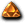
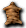
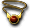

※各怪物的編輯請由標題的鉛筆圖示進行。掉落物品的編輯也可以從掉落物品欄的
童話夢魘1｜童話夢魘2｜荒廢礦坑1｜荒廢礦坑2｜時空迴廊1｜時空迴廊2
海上孤島1｜海上孤島2｜悠久之森1｜悠久之森2｜冰之庭園1｜冰之庭園2
出現怪物
克雷吉蒙布林格
夢魘
斯雷夏魔瓜
 獨眼怪 獨眼怪 | Lv | AC | MC | AAR | SAR | 掉落物品 |
| HP:40000 | 115 | -70 | -15 | 40 | 20 | 布羅巴、命運戒指、 錫礦石、鎳礦石、 錫礦石、鎳礦石、 鋁礦石、鋅礦石、鐵礦石、銅礦石、銀礦石、金礦石、 鋁礦石、鋅礦石、鐵礦石、銅礦石、銀礦石、金礦石、 魔力之泉 魔力之泉 |
| 經驗值 | 名聲值 | 金錢 | 攻擊屬性 | 防禦屬性 | ||
| 22000 | 0 | 0 | 神聖 | 神聖 | ||
| STR | DEX | INT | WIS | CON | ||
| 100 | 120 | 100 | 100 | 95 |
備註
克雷吉蒙布林格
| 克雷吉蒙布林格 | Lv | AC | MC | AAR | SAR | 掉落物品 |
| HP:40000 | 115 | -70 | -15 | 40 | 20 | 謎團魔石、冰霜戒指、錫礦石、鎳礦石、鋁礦石、鋅礦石、鐵礦石、銅礦石、銀礦石、金礦石、強力力量強化、 生命之泉 生命之泉 |
| 經驗值 | 名聲值 | 金錢 | 攻擊屬性 | 防禦屬性 | ||
| 22000 | 0 | 0 | 神聖 | 神聖 | ||
| STR | DEX | INT | WIS | CON | ||
| 100 | 120 | 100 | 100 | 95 |
備註
夢魘
| 夢魘 | Lv | AC | MC | AAR | SAR | 掉落物品 |
| HP:150000 | 115 | -85 | -45 | 60 | 30 |  極光之鍊2、綠松石、紅玉髓、 極光之鍊2、綠松石、紅玉髓、 翡翠、縞瑪瑙、貴橄欖石、 翡翠、縞瑪瑙、貴橄欖石、 玉髓石、 玉髓石、 黑珍珠、 黑珍珠、 紫水晶、青金石、玫瑰水晶、綠柱石、碧玉、 紫水晶、青金石、玫瑰水晶、綠柱石、碧玉、 金綠柱石、風信子石、 血石、電漿石、黃玉、 血石、電漿石、黃玉、 祖母綠、藍寶石、 祖母綠、藍寶石、 紅寶石、 紅寶石、 鑽石 鑽石 |
| 經驗值 | 名聲值 | 金錢 | 攻擊屬性 | 防禦屬性 | ||
| 70000 | 0 | 0 | 神聖 | 神聖 | ||
| STR | DEX | INT | WIS | CON | ||
| 130 | 130 | 120 | 150 | 120 |
備註 無效混亂
| 萬聖節南瓜 | Lv | AC | MC | AAR | SAR | 掉落物品 |
| HP:40000 | 115 | -70 | -15 | 40 | 20 |  勇者拳套、 勇者拳套、 妖貓之爪1、雨戒指、古代的捲軸、錫礦石、鎳礦石、鋁礦石、鋅礦石、鐵礦石、銅礦石、銀礦石、金礦石、生命之泉 妖貓之爪1、雨戒指、古代的捲軸、錫礦石、鎳礦石、鋁礦石、鋅礦石、鐵礦石、銅礦石、銀礦石、金礦石、生命之泉 |
| 經驗值 | 名聲值 | 金錢 | 攻擊屬性 | 防禦屬性 | ||
| 22000 | 0 | 0 | 暗黑 | 土 | ||
| STR | DEX | INT | WIS | CON | ||
| 100 | 120 | 100 | 100 | 95 |
備註
 賽可魔瓜 賽可魔瓜 | Lv | AC | MC | AAR | SAR | 掉落物品 |
| HP:40000 | 115 | -70 | -15 | 40 | 20 | 命運戒指、詛咒的捲軸、錫礦石、鎳礦石、鋁礦石、鋅礦石、鐵礦石、銅礦石、銀礦石、金礦石、耐力之泉 |
| 經驗值 | 名聲值 | 金錢 | 攻擊屬性 | 防禦屬性 | ||
| 22000 | 0 | 0 | 暗黑 | 土 | ||
| STR | DEX | INT | WIS | CON | ||
| 100 | 120 | 100 | 100 | 95 |
黑暗
斯雷夏魔瓜
| 斯雷夏魔瓜 | Lv | AC | MC | AAR | SAR | 掉落物品 |
| HP:150000 | 115 | -85 | -45 | 60 | 30 |  巫師耳環、 巫師耳環、 怪物的血液、綠松石、紅玉髓、翡翠、縞瑪瑙、貴橄欖石、玉髓石、黑珍珠、紫水晶、青金石、玫瑰水晶、綠柱石、碧玉、金綠柱石、風信子石、血石、電漿石、黃玉、祖母綠、藍寶石、紅寶石、鑽石 怪物的血液、綠松石、紅玉髓、翡翠、縞瑪瑙、貴橄欖石、玉髓石、黑珍珠、紫水晶、青金石、玫瑰水晶、綠柱石、碧玉、金綠柱石、風信子石、血石、電漿石、黃玉、祖母綠、藍寶石、紅寶石、鑽石 |
| 經驗值 | 名聲值 | 金錢 | 攻擊屬性 | 防禦屬性 | ||
| 70000 | 0 | 0 | 暗黑 | 土 | ||
| STR | DEX | INT | WIS | CON | ||
| 130 | 130 | 120 | 150 | 120 |
備註 順時針攻擊 混亂無效
 絨毛鼠 絨毛鼠 | Lv | AC | MC | AAR | SAR | 掉落物品 |
| HP:40000 | 115 | -70 | -15 | 40 | 20 | 艾爾馬、彎刀、杜林鼓、蘭斯戒指、甲殼的捲軸、錫礦石、鎳礦石、鋁礦石、鋅礦石、鐵礦石、銅礦石、銀礦石、金礦石、耐力之泉、  獸皮 |
| 經驗值 | 名聲值 | 金錢 | 攻擊屬性 | 防禦屬性 | ||
| 22000 | 0 | 0 | 無 | 無 | ||
| STR | DEX | INT | WIS | CON | ||
| 100 | 120 | 100 | 100 | 95 |
備註
| 健美齒虎 | Lv | AC | MC | AAR | SAR | 掉落物品 |
| HP:40000 | 115 | -70 | -15 | 40 | 20 | 雨戒指、特製摩斯果汁、 強力sar強化、錫礦石、鎳礦石、鋁礦石、鋅礦石、鐵礦石、銅礦石、銀礦石、金礦石、魔力之泉、獸皮 強力sar強化、錫礦石、鎳礦石、鋁礦石、鋅礦石、鐵礦石、銅礦石、銀礦石、金礦石、魔力之泉、獸皮 |
| 經驗值 | 名聲值 | 金錢 | 攻擊屬性 | 防禦屬性 | ||
| 22000 | 0 | 0 | 神聖 | 神聖 | ||
| STR | DEX | INT | WIS | CON | ||
| 100 | 120 | 100 | 100 | 95 |
怪物詛咒防禦
 蒂拉諾 蒂拉諾 | Lv | AC | MC | AAR | SAR | 掉落物品 |
| HP:150000 | 115 | -85 | -45 | 60 | 30 | 漂亮波利、綠松石、紅玉髓、翡翠、縞瑪瑙、貴橄欖石、玉髓石、黑珍珠、紫水晶、青金石、玫瑰水晶、綠柱石、碧玉、金綠柱石、風信子石、血石、電漿石、黃玉、祖母綠、藍寶石、紅寶石、鑽石 |
| 經驗值 | 名聲值 | 金錢 | 攻擊屬性 | 防禦屬性 | ||
| 70000 | 0 | 0 | 火 | 火 | ||
| STR | DEX | INT | WIS | CON | ||
| 130 | 130 | 120 | 150 | 120 |
暴龍肉塊(遠距離傷害) 混亂無效 維持鎖定
 恐怖魔瓜 恐怖魔瓜 | Lv | AC | MC | AAR | SAR | 掉落物品 |
| HP:1000000 | 120 | -95 | -65 | 10 | 20 |  失去光輝的捲軸(破邪)、失去光輝的捲軸(技量)、失去光輝的捲軸(力量)、失去光輝的捲軸(強靱)、失去光輝的捲軸(智慧)、失去光輝的捲軸(知識)、潘特拉、 失去光輝的捲軸(破邪)、失去光輝的捲軸(技量)、失去光輝的捲軸(力量)、失去光輝的捲軸(強靱)、失去光輝的捲軸(智慧)、失去光輝的捲軸(知識)、潘特拉、 呢喃之戒、 呢喃之戒、 解毒狂手套、摩斯束縛者、 解毒狂手套、摩斯束縛者、 解放燎炎之鍊 |
| 經驗值 | 名聲值 | 金錢 | 攻擊屬性 | 防禦屬性 | ||
| 1000000 | 50000 | 0 | 暗黑 | 土 | ||
| STR | DEX | INT | WIS | CON | ||
| 200 | 140 | 150 | 200 | 200 |
備註 隱形 Pumkin劈擊 毒牙 順時針攻擊